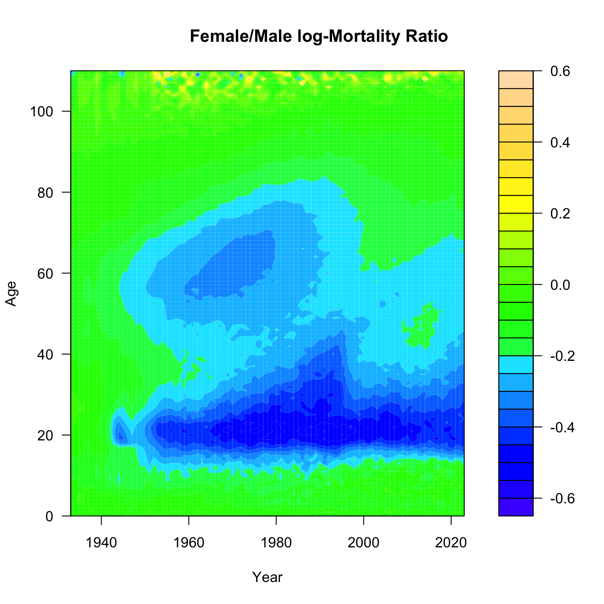
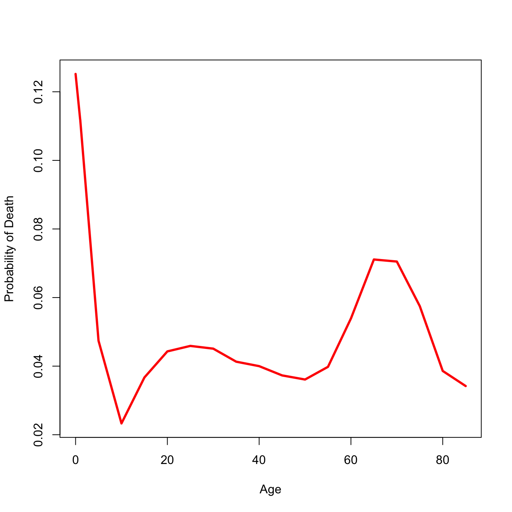
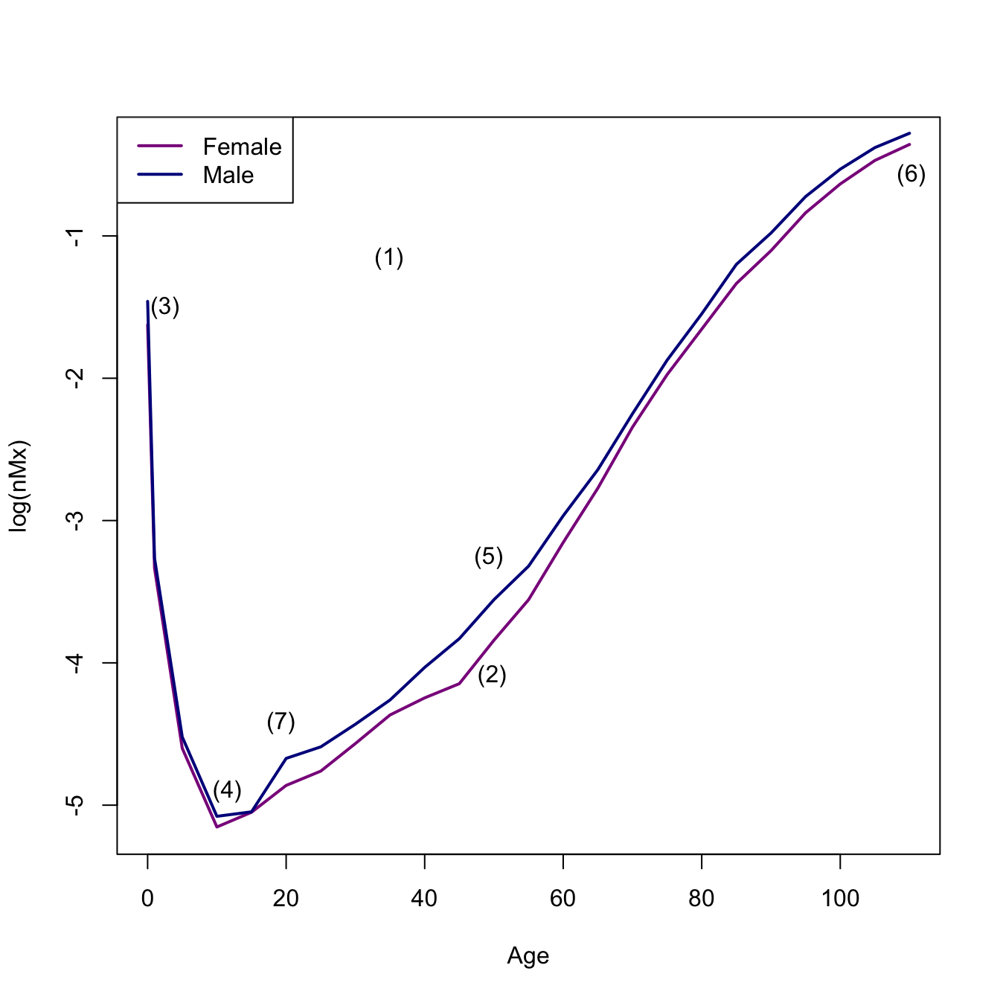
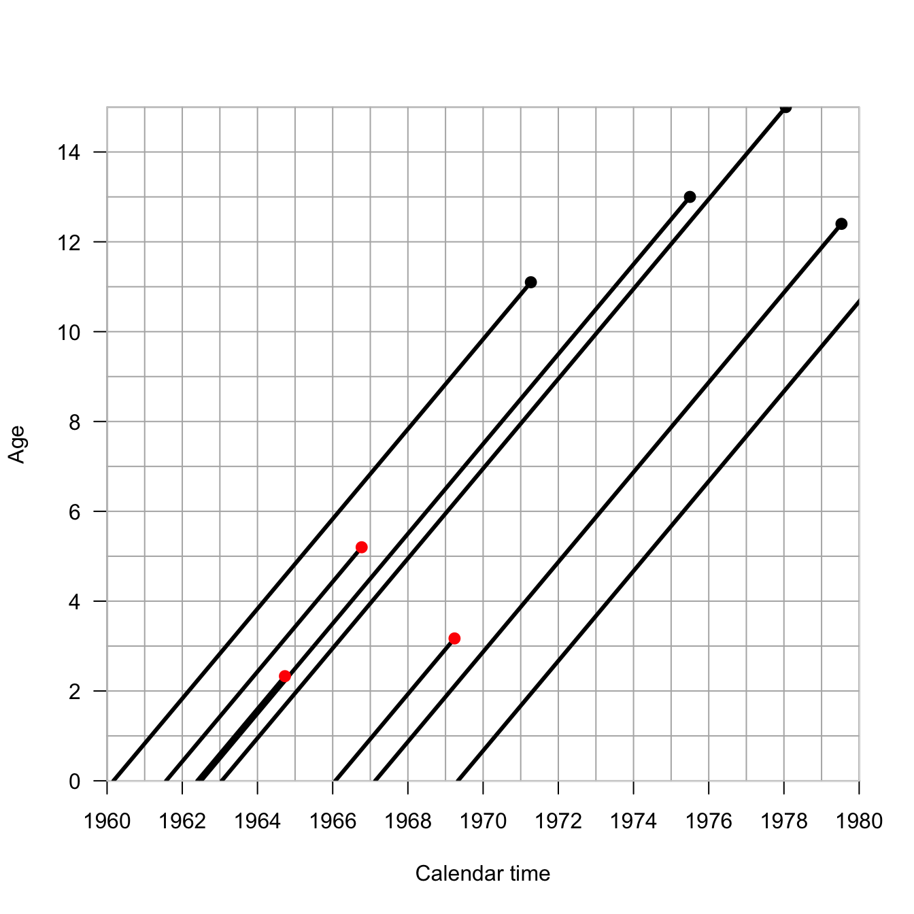
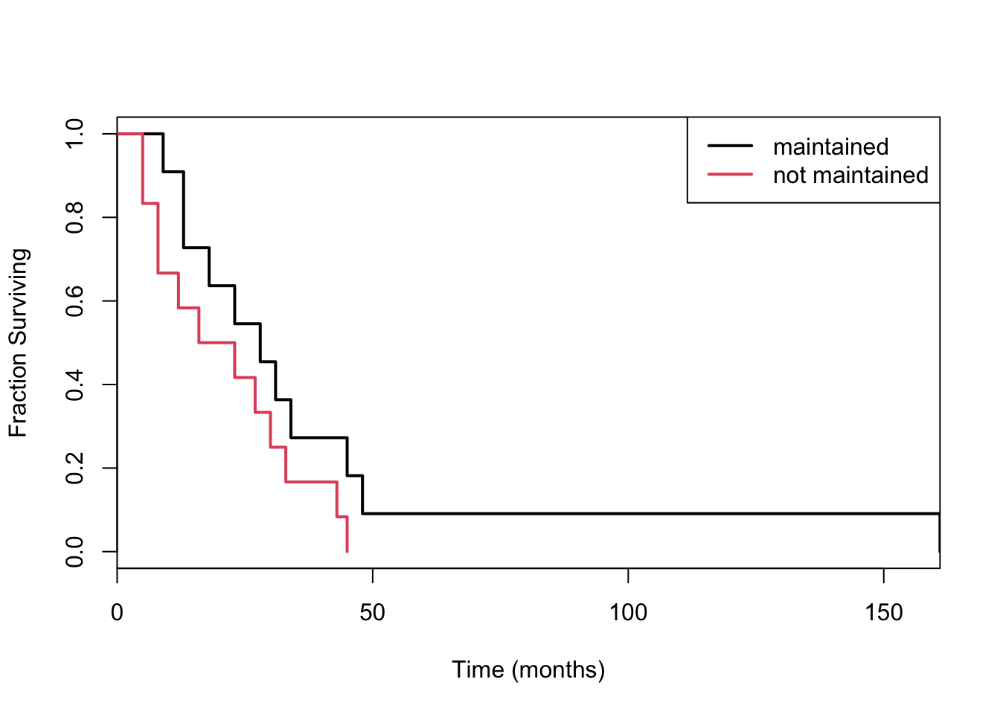

Demographic rates typically take the form of so-called event/exposure rates. In essence, we count the number of events of interest (e.g., births, deaths, marriages, bouts of diarrhea, job losses) and divide by the population at risk for the event. The population at risk is a combination of two things: (1) the number of people in the time period and (2) the length of the period. The measure that combines these is known as person-years at risk for the event. Much of demography involves measuring these person-years of risk. This is why it is sometimes said that Epidemiology measures numerators while Demography measures denominators.
Time enters demography in two distinct ways: (1) through calendar time (which is the same for everyone) and (2) through personal time measured for each person as age. This distinction in time leads to two different ways of conceiving of a population. A cohort is a group of individuals that we follow simultaneously through time. In contrast, a period is a specific historical span of time and the population that occupies that time. The Lexis diagram is a useful graphical device that helps organize thinking about ages, periods, and cohorts. It plots calendar time along the horizontal axis and age along the vertical axis. A person who is born at some time \(t\) is plotted with a lifeline that intercepts the horizontal axis at \(t\) and then increases with a slope of unity (since for every year that passes, a person is a year older) until death.
6.1.1 The Lexis diagram.
We can use the Epi package to conveniently draw Lexis diagrams.
I am an honorary Berkeley Demography Nerd and as my homage to the great Ken Wachter, I will use historical data from the UK to illustrate the Lexis diagram. Ken had a habit of using literary and historical examples in his teaching and writing. King Edward III of England reigned from 1312-1377 and had 11 children. We know the dates of birth and death of all but one of these children
Children of King Edward III of England (1312-1377)
Each individual is represented by a line with x-origin of their birth-date. The line has a slope of 1 because each year that passes, the individual is one year older. So what’s so profound about plotting a line of age vs. time? They’re literally just a collection of lines with a slope of 1. In fact, in most applications, we supress individual life lines and work with the more abstract space. The Lexis diagram is actually surprisingly helpful for thinking about problems of age vs. period vs. cohort. The so-called age-period-cohort problem is ubiquitous in demography and epidemiology and it’s nice to have a tool to help us understand it. Think about the possibilities for confounding: age effects arise because of intrinsic biological processes like development and aging; periods effects arise because of historical circumstances that affect everyone alive at that moment; cohort effects arise from the particular circumstances experienced by a cohort as they move through time.
The half plane that defines the Lexis diagram is called the age-time plane. The Lexis diagram employs some standard demographic conventions, which are useful to state explicitly: A person’s exact age at any given time is the time elapsed since their birth. A person’s age in completed years at any given time is the greatest integer less than their exact age. Age in completed years is also referred to as “age at last birthday.” Time refers to a point in time, while a time period refers to an interval beginning and ending at specified times. Time and time period are analogous to exact age and age group.
We can divide up the age-time plane in different ways. Any straight line segment in the age-time plane represents the set of individuals whose life lines intersect this line. A line segment perpendicular to the time axis, intersecting at time \(t\), represents the set of all individuals in the population at time \(t\). If we did a census at \(t\), these are the people we would count, so we can call the individuals intersected by this line the census set of the population at time \(t\).
We can also draw rectangles, which will intersect with larger groups of individuals. Vertical rectangles capture time periods, while horizontal rectangles capture age groups. Diagonal parallelograms capture cohort experience.
In the following Lexis diagram, if we wanted to calculate the mortality rate for the period 1960-1980 (the black rectangle), we’d count up the number of events (black circles) and divide by the total length of the line segments contained in the rectangle.
Incidentally, that’s not really a practical way to calculate mortality rates; it’s conceptual.
If we wanted to examine the mortality of a cohort of people born within ten years of each other, what would the Lexis rectangle look like? Here we follow the people born between 1950-1960 until 1990 (when most of the life lines are right-censored). Our rectangle has turned into a parallelogram.
Because we haven’t talked about enough geometric shapes yet, here’s another. Turns out, making triangles by dividing parallelograms in half is really useful.
In this Lexis diagram, the orchid vertical rectangle represents the period from 2003-2004. The blue diagonal represents all individuals born in calendar year 2000. Their intersection describes the two Lexis triangles. The lower Lexis triangle is all individuals born in 2000 who are 2 at their last birthday in the year 2003. The upper Lexis triangle is that individuals born in 2000 who are 3 at their last birthday in 2003. Individuals from a particular cohort, \(t-x\), are thus split across two different Lexis squares, which combine a a period and age class of the same width. Another way to think about this is that every Lexis square contains events that happened to individuals from the \(t-x\) and \(t-x+1\) cohorts.
The Human Mortality Database makes extensive use of Lexis triangles in its calculations. For example, the cross-classification required to locate a Lexis triangle—you need to know the year of birth, the age at death, and the year of death to place a death in a triangle—provides important quality checks on mortality data. Moreover, by knowing the distribution of deaths in upper vs. lower triangles, we can impute unknown ages at death, as described in the document linked above.
One final Lexis variant. This is called a Lexis surface plot. I’ve downloaded the yearly central death rates for the USA from 1933-2023 from HMD. We’ll plot Lexis surfaces for women, men, and the ratio of female-to-male log-mortality. Might need to work a bit on the color scale, but it’s a start.
require(MetBrewer)
Loading required package: MetBrewer
usa <-read.table(file="./data/usa_mx_1x1.txt", skip=1, header=TRUE)head(usa)
# initialize 2 matrices to hold the age x year mortality ratesfmx <-matrix(0,nrow=111,ncol=91)mmx <-matrix(0,nrow=111,ncol=91)# insert the columnsfor(i in0:90){ fmx[,i+1] <- usa$Female[usa$Year==i+1933]}for(i in0:90){ mmx[,i+1] <- usa$Male[usa$Year==i+1933]}age <-0:110year <-1933:2023bounds <-c(min(log10(range(usa$Female))),max(log10(range(usa$Male))))ccc <-met.brewer("Johnson",24)## need to transpose the matrix to get the dimensions to matchfilled.contour(x=year, y=age, z=log10(t(fmx)),col=ccc, levels=pretty(bounds,20),xlab="Year", ylab="Age")title("Female")
## Ratio of log-Mxmux.ratio <-t(fmx)/t(mmx)filled.contour(x=year,y=age,z=log10(mux.ratio),col=topo.colors(25), xlab="Year", ylab="Age")title("Female/Male log-Mortality Ratio")

Need to think a bit about what this last surface is. Take the ratio of female-to-male mortality and then take the common logarithm of that. If female mortality is less than male mortality, this ratio will be less than one and its logarithm will be negative. The darker the blue, the greater male mortality is relative to female mortality. Yellow means a male mortality advantage, while green means that they are approximately equal.
Can you see the mortality cross-over? What about the accident hump?
What was happening in the 1960s and 1970s to 60 year-old men? Is that smoking? Is that basically the Don Draper bulge? And what happened to the accident hump in 1997? I actually know the answer to the latter, but I’m still not sure about the former. That said, it’s worth noting that that 1960s bulge happens to be a cohort of men who fought in WWII 20 years earlier, in an era where we pretended that mental health of veterans wasn’t a problem and people regularly self-medicated. Regarding the rise and precipitous drop of male disadvantage across the 1980s-1990s: In 1997, David Ho’s team published a paper in Nature describing their success in suppressing HIV-1 in the cells of infected patients using combination anti-retroviral therapy. This marked the beginning of the end of the AIDS era. The growing excess of male deaths among young adults in the 1980s and early 1990s reflects the fact that HIV/AIDS was primarily a disease of gay men in the United States when it first emergeged.
6.2 Anatomy of the Human Mortality Curve
The mortality curve is a plot of the log of the central mortality rate against age. It has a general bathtub shape. There are marked sex differences (males typically higher at all ages). Mortality is high immediately after birth and declines rapidly. Mortality is lowest during mid-childhood. Males typically show an adolescent accident hump. Mortality increases linearly on a log scale from ages 30 onward. There is frequently a decline in the mortality rate among the oldest old
There are seven characteristic features of the human mortality curve:
An overall “bathtub” shape
Male mortality generally higher than female mortality at most ages
An early peak in mortality rate
A bottoming-out of mortality in middle childhood
A nearly linear increase in mortality on a log-scale starting at age 30
An eventual decline in mortality (from very high levels) at the oldest ages
An “accident hump” in male mortality in late adolescence or early adulthood
6.3 Period Life Table
A life table is a summary of the mortality experience of a cohort of people. A cohort life table follows an actual cohort of people through time. Cohort life tables are typically quite limited because to know the full mortality experience of a cohort, you have to follow it through cohort extinction. Since people can live for 100 years or more, this means you typically don’t have cohort life tables for recent populations. It also means that the mortality experience of those who died young often happened in a very different time, where sources of mortality and healthcare might have been very different indeed.
A period life table summarizes the mortality experience of a synthetic cohort of people, doing the as-if experiment of what this population would look like if it experienced the mortality conditions as they pertain to the present time. It’s very important to always remember that a period life table is actually a fiction. It’s a useful fiction, but a fiction nonetheless. One area where we currently (July 2025) are seeing a lot of confusion about the useful fiction of period demographic measures is not about mortality but fertility (notes forthcoming). There is currently a great deal of consternation about falling birth rates in the US and around the world. Elon Musk thinks that population collapse is the second biggest threat to humanity (after AI, of course). Vice President JD Vance wants “more babies.” Two UT economists have written a book about population collapse called After the Spike. I just read an editorial in the Wall Street Journal about fertility decline this morning. The thing is, the fertility rate of 1.6 births/woman that currently characterizes the US (the lowest ever recorded), and is causing widespread panic, is a period measure. It’s one of these useful fictions. If the population, composed as it is by a mixture of cohorts, is actively changing its behavior—for example, delaying childbearing until later in life—then the period-measure of fertility (the total fertility rate or TFR) will underestimate the actual completed fertility of younger women during a period. This is a widely understood phenomenon among demographers—typically discussed under the moniker Quantum vs. Tempo of reproduction—and has been nicely summarized by a group of outstanding contemporary demographers (Leslie Root, Karen Benjamin Guzzo and Shelly Clark) who specialize in fertility in a recent explainer in The Conversation.
You might see the adjective abridged used for life tables, mostly in older literature. This typically means that the ages included in the life table are all five-year classes except for the first two, which are one year (0-1, infants) and four years (1-5, young children). A complete life table would have values for all individual years. Life tables with five-year age classes (called quinquennia) are by far the most common form you will encounter.
The period life table is one of the central tools of demography. It follows a hypothetical cohort (i.e., a group of people born at the same moment) through time until every one of its members die. Life tables are conceptually simple but they contain a lot of notation, so strap in. Many of the entries of a life table have both pre- and post-subscripts (typically \(n\) and \(x\) respectively). Take, for example, the mortality rate between ages \(x\) and \(x + n\):
\[ {_nm_x} = \frac{ {_nd_x}}{{_nL_x}}. \]
The term in the numerator on the right-hand side of the equality represents the number of deaths between exact ages \(x\) and \(x+n\), while the denominator is the number of person-years lived between these ages. In general, the post-subscript \(x\) indicates the exact age at a person’s last birthday, while the pre-subscript \(n\) represents the number of years in the age interval. If there is no pre-subscript, this value is generally taken to be a single year.
We typically estimate this mortality rate by dividing the enumerated deaths between ages \(x\) and \(x + n\) by the mid-population census size between ages \(x\) and \(x + n\). It is important to note that these are rates and not probabilities and that in order to construct a life table, we have to convert the rates to probabilities.
Demography necessarily involves a lot of book-keeping. This means that it is fairly notation-heavy. The notation takes a bit of getting used to, but there is nothing really fundamentally difficult about it. The following table summarizes the columns of a life table.
Symbol
Definition
\(x\)
Exact age at the start of the interval
\(l_x\)
Number alive at age \(x\)
\(_nd_x\)
Number dying between ages \(x\) and \(x+n\)
\(_nq_x\)
(\(= {_n}d_x/l_x\)) Probability of dying between \(x\) and \(x+n\)
\(_np_x\)
(\(=1- {_n}d_x/l_x\)) Probability of surviving between \(x\) and \(x+n\)
\(_nL_x\)
Number of person-years lived between \(x\) and \(x+n\)
\(_nT_x\)
Number of person-years that a cohort lives after reaching \(x\)
\(e_x\)
(\(=T_x/l_x\)) Expected length of life after reaching age \(x\)
\(_nm_x\)
(\(={_nd}_x/{_nL}_x\)) Death rate in the age interval \(x\) to \(x+n\)
\(_na_x\)
Average number of person-years lived by those who die between ages \(x\) and \(x+n\)
In a particular period, vital statistics collected by the state provide the number of deaths by age group \(_nD_x\) (note the capital letter) and the corresponding mid-year populations \(_nK_x\). From these we can estimate the death rates
\[_nM_x = \frac{_nD_x}{_nK_x} \]
We capitalize this death rate to indicate that it is empirical—it results from the observed deaths divided by the mid-interval population size. This is our approximation of the life-table mortality rate \(_nm_x\).
We now follow a hypothetical (synthetic) cohort of \(l_0\) (the size of which is called the radix of the life table) individuals through life as though they experienced the above mortality rates, which are estimates of
The person-years lived between \(x\) and \(x+n\) is the \(l_{x+n}\) survivors who each live \(n\) years plus the years lived by the \(_nd_x\) who die in the interval, the average of which is \(_na_x\)
\[ _nL_x = n\, l_{x+n} + {_nd_x}\; {_n}a_x \]
Remember that \(_nd_x = l_x - l_{x+n}\), or \(l_{x+n} = l_x - {_nd_x}\). Substitute this for \(l_{x+n}\) above to get
This is known as the Greville equation and it’s how we convert our observed mortality rates into the life-table probabilities (assuming that \(_nM_x \approx {_n}m_x\)).
To construct a period life table from estimates of the central mortality rate, we only need the average number of person-years lived by individuals dying in the interval \(_na_x\). But wait, how do we know the \(_na_x\)? The following relationships are due to Keyfitz:
\[ _1a_0 = 0.07 + 1.7\ {_1m_0}, \]
\[ _4a_1 = 1.587 - 2.816\ {_1m_0}, \]
and
\[ _na_x = n/2,~~~~~x \in 5, 10, 15, \ldots \]
Keyfitz found values of \(_1a_0\) and \(_4a_1\) through regression of observed values of years lived among those dying in infancy and early childhood on measures of infant mortality. These estimates generally work pretty well, but will be off for very high-mortality populations.
The last age interval is usually open. For example 85+, which includes ages 85 through the oldest observed age at death in the population. Since everyone must die,
\[ _{\infty}q_x = 1 \]
This is a logical result and applies regardless of the observed death rate \(_nm_x\). The last observed death rate is
\[ _{\infty}m_x = {_\infty}d_x/ {_\infty}L_x \]
Since everyone dies, the number of deaths in the final open interval is equal to the number who enter
\[ _{\infty}d_x = l_x. \]
In the construction of a life table, this quantity is already constructed, so we now can write the expression for person-years lived in the open interval:
\[ _{\infty}L_x = l_x/ {_{\infty}m_x}. \] So now that you’re totally overwhelmed with notation, let’s actually construct a life table.
6.4 Constructing a Period Life Table
Let’s make a period life table. We’ll start with vectors of reported deaths and mid-interval population sizes. The ages are pretty standard. Because mortality changes very fast early in life, our first age classes are shorter than subsequent ones. So we have ages 0, 1, and 5 and then every five years until the maximum age. For this data set, the maximum age is 85. Of course, it’s an open age class. It really means “85 years old or greater.”
This turns out to be a high-mortality population, so the Keyfitz appraoch to \(_na_x\) will not work. We will instead use an approach attributable to Coale and Demeney. It is based on the same idea—regression of observed person-years lived on infant mortality—it just involves quite different values. In very high-mortality environments, the number of person-years lived by infants or young children dying in the interval will be substantially less than in low-mortality environments. That’s because in high-mortality conditions, you are more likely to die early and thus contribute fewer years to \(_na_x\). We’ll actually write a simple function to determine the coefficients to use and calculate our \(_na_x\) values for the first two age classes.
coale <-function(b1,b4,nMx){if(nMx[1]>0.107){ b1 <-c(0.350,0) b4 <-c(1.361,0) } nax12 <-c(0,0) nax12[1] <- b1[1] + b1[2] *nMx[1] nax12[2] <- b4[1] + b4[2]* nMx[1]return(nax12)}nax12 <-coale(b1=c(0.053,2.8), b4=c(1.522,1.518), nMx)# initialize nax vectornax <-NULLnax[1] <- nax12[1]nax[2] <- nax12[2]nax[3:(nmax-1)] <- iwidth/2nax[nmax] <-1/nMx[nmax]# width of the intervals -- make last interval essentially unboundedn <-c(1,4, rep(iwidth, nmax -3),999)# Greville equation nqx <- (n*nMx) / (1+ (n-nax)*nMx)# everyone has to die by the last interval, by definition nqx[nmax] <-1.0# survivorship lxlx <-cumprod(c(1,1-nqx))# dx ndx <--diff(lx)# person-years lived by survivorslxpn <- lx[-1]nLx <- n*lxpn + ndx*naxTx <-rev(cumsum(rev(nLx)))# life expectancyex <- Tx/lx[1:nmax]## format the life tablelt <-data.frame(x, nax =round(nax,4), nMx =round(nMx,4), nqx =round(nqx[1:nmax],4), lx =round(lx[1:nmax],4), ndx =round(ndx,4), nLx =round(nLx,4),Tx =round(Tx,2),ex =round(ex,2) )lt
plot(lt$x, lt$ndx, type="l", lwd=3, col="red", xlab="Age", ylab="Probability of Death")

That all seems like kind of a lot to remember every time you want to calculate a life table. Fortunately, I have written a package called demogR that provides all these commands as a simple function—and much more! The data that we used in the laborious life-table example are from Madagascar in 1966. There is a data set included in demogR that has vital-rate data from this population as well as Venezuela in 1965, and the United States in 1967. We use the function life.table() to construct the period life table. The function has a lot ways to customize life-table construction. One of these is the type argument. This is how we calculate the first two values of \(_na_x\). It takes as its default the Keyfitz method. Because infant mortality is so high in the Madagascar data, we need to use the Coale-Demeny option (type="cd").
We obviously don’t have enough age categories for Venezuela and the USA! Turns out that Goodman et al. didn’t need the older ages for their analysis (which was awesome, by the way; one of my all-time favorite papers).
6.5 The Mortality Database
The Human Mortality Database is an online collection of high-quality mortality data, primarily from more developed countries. To download data, it requires you to have an account. There is actually an R package for interfacing the the database (HMDHFDplus), but I won’t use that for pedagogical reasons. You can download \(_nD_x\) and \(_nK_x\) data or life tables that have already been calculated for you.
I’ve downloaded the men’s and women’s life tables for 5-year age classes and 10-year intervals from 1751-2020. Let’s compare the mortality curves for the 1810 life table.
sf <-read.table(file="./data/sweden_flt_5x10.txt", skip=1, header=TRUE)sm <-read.table(file="./data/sweden_mlt_5x10.txt", skip=1, header=TRUE)## pull out 1810 data## use a regex, matching "1810"f1810 <- sf[grep("1810",sf$Year),]m1810 <- sm[grep("1810",sm$Year),]# fix the agesf1810$Age <-c(0,1,seq(5,110,by=5))m1810$Age <-c(0,1,seq(5,110,by=5))## plot central death ratesplot(f1810$Age, log(f1810$mx), type="l" , lwd=2, col="magenta4", xlab="Age", ylab="log(nMx)")lines(m1810$Age, log(m1810$mx), lwd=2, col="blue4")legend("topleft",c("Female","Male"),lwd=2,col=c("magenta4","blue4"))## annotate: I actually used p <- locator(7) to get the pointsx <-c(34.87, 49.75, 2.5, 49.25, 11.5, 110.27, 19.25)y <-c(-1.16, -4.09, -1.5, -3.26, -4.90, -0.57, -4.42)text(x=x,y=y,labels=c("(1)", "(2)", "(3)", "(5)", "(4)", "(6)", "(7)"))

# I got one out of order when I used locator()!
We can see all the features of the human mortality schedule here:
An overall “bathtub” shape
Male mortality generally higher than female mortality at most ages
An early peak in mortality rate
A bottoming-out of mortality in middle childhood
A nearly linear increase in mortality on a log-scale starting at age 30
An eventual decline in mortality (from very high levels) at the oldest ages
An “accident hump” in male mortality in late adolescence or early adulthood
6.6 Survival Analysis
The life table turns out to be a special—high-on-notation—case of a broader form of statistical analysis called survival analysis or event-history analysis. Here are just a few quick notes on this. Plenty more notation, but generally done more with calculus than with discrete categories. Just remember that whenever you see an integral, it’s a (continuous) sum and when you see a derivative, it’s a slope.
Let \(T\) denote the failure time of individuals (or other items) in a population. \(T\) is a continuous non-negative random variable with probability density function \(f(t)\) and cumulative probability function (cdf) \(F(T)\). That is,
\[ F(T) = P(t \leq t) = \int_0^t f(u) du \]
Define the survivor function as the probability of an individual surviving until time \(T\)
\[ S(t) = Pr(T > t) = 1 - F(t) \]
\(S(t)\) is monotone decreasing and \(S(0)=1\) (everyone is alive when they are born).
The hazard function\(h(t)\) is the instantaneous rate of failure at time \(t\):
\[ h(t) = \lim_{\Delta t \rightarrow 0} \frac{Pr[ t \leq T < t +
\Delta t | T \geq t ]}{\Delta t} \]
Note that this is a rate, not a probability (except in the limit \(\Delta t \rightarrow 0\)). This means that \(h(t)\) is not bounded from above.
Our three measures of interest are related in the following way:
\[h(t) = f(t)/S(t)\]
Does this look like anything we’ve seen already? \(f(t)\), \(S(t)\), and \(h(t)\) all provide identical and complete characterizations of the distribution of \(T\).
Since \(S(t) = 1 - F(t)\), \(f(t) = -d/dt S(t)\), we have
\[ h(t) = - \frac{d}{dt} \log [ S(t) ] \]
and
\[ S(t) = \exp \left( - \int_0^t h(u) du \right) \] In other words, the hazard at age \(t\) is the minus the slope of the log-survivor function at that age and the survivor function at age \(t\) is the exponential of minus the integrated (or cumulative) hazard to that age.
The cumulative hazard\(H(t) = \int_0^t h(u)du\) is related to the survivor function as
\[ S(t) = \exp(-H(t)) \].
As a sanity check, note that at moment of (live) birth (i.e., \(t=0\)), an individual has not yet experienced any mortality hazard. So what is the value of the survivor function?
You have, no doubt, picked up on this already, but corresponding life-table entries for \(S(t)\), \(f(t)\), and \(h(t)\) are \(l_x\), \(_nd_x\), and \(_nm_x\). Sometimes, it’s good to have our intuitions validated.
6.6.1 Some Features
Time-to-event or failure data are non-negative: \(T \geq 0\). Times can be continuous, i.e., defined on \((0,\infty)\) or can occur at discrete values. Censoring is one of the features that distinguishes survival analysis from other, more conventional statistical models. Censoring means that we observe an individual case in whole or only partially. Consider a censoring variable \(C\). If \(T_i \leq C_i\), then event \(i\) is observed; otherwise it is censored. What we actually observe then is \(X_i = \min(T_i,C_i)\).
It is very important to account for censored observations in our estimates of survival/hazards. Note with Edward III’s children, if we were trying to estimate a mortality rate and excluded William of Hatfield, who died young but at an unknown age, our estimate would be biased. It would be too high. This is because, even if we don’t know the outcome of a censored individual, they contribute to the risk set while they are observed. Eliminating censored observations is a rookie mistake that biases survival estimates. In the case of William of Hatfield, it biased the estimate upward. However, in many empirical cases where you follow a cohort for a fixed amount of time and cease observations before everyone has exited, it will bias survival estimates downward because you eliminate those who live the longest!
There are multiple types of censoring. Left censoring occurs when individuals have been exposed to the event of interest before the study started. This is very common in field studies of mortality where individuals are alive when the study starts. Think: Gombe chimpanzees when Jane Goodall arrived in 1960. Right censoring happens (among other reasons) when a study ends and individuals are still alive. There can also be interval censoring where you lose track of some individuals in a study. This is less of an issue for mortality studies, but can matter a lot for recurrent phenomena like fertility or bouts of some illness.
We say that censoring is independent or non-informative if \(C_i\) is independent of \(T_i\). This won’t always be the case: e.g., a patient may drop out of a study because he becomes very sick and can’t easily leave their bed. In this case becoming lost-to-follow-up and death are probably not independent. Censoring that occurs because a study ends and study individuals are still alive is probably approximately independent. Censoring that occurs because individuals are alive when you start your study is probably not totally independent because those observed individuals had to live long enough to be observed in the first place. This is related to a well-known phenomenon in epidemiology known as length-time bias (I swear; don’t ask me why it’s not time-length bias). Length-time bias leads to over-estimation of survival.
require(Epi)Lexis.diagram(date=c(1960,1980), age=c(0,15), int=1,entry.age=c(0,0,0,0,0),exit.age=c(11.1,13,15,12.4,11.8),birth.date=c(1960.17,1962.5,1963.05,1967.13,1969.33),fail=c(TRUE,TRUE,TRUE,TRUE,TRUE),lwd.life=3,pch.fail=19,cex.fail=1.1)## some censored observationsLexis.lines( entry.age=c(0,0,0),exit.age=c(5.2,2.33,3.17),birth.date=c(1961.57, 1962.4, 1966.07),fail=c(FALSE,FALSE,FALSE),lwd.life=3,col.fail="red",pch.fail=19,cex.fail=1.1)

We can see the impact ignoring the censored observations has on estimating the hazard.
## mortality hazard from figure using only complete observations5/sum(c(11.1,13,15,12.4,11.8))
[1] 0.07898894
## now include the censored observations in the risk set5/sum(c(11.1,13,15,12.4,11.8,5.2,2.33,3.17))
[1] 0.06756757
6.6.2 Kaplan-Meier Estimator
If there is no censoring, a good empirical estimate of the survival function, \(\tilde{S}(t)\), is simply the fraction of individuals with event times greater than \(t\). If there is censoring, this is not such a good estimator.
Consider the data aml in the survival package, which describes the survival times of leukemia patients. The data contains one covariate: whether treatment was maintained or not.
Divide the time range into discrete chunks \(1,2,\ldots,J\). The Kaplan-Meier estimator of the survival curve at age \(j\) is simply the product of of all \(i<j\) of the probabilities of surviving each of these. This is given by:
the \(d_i\) are observed deaths at time \(t_i\) and \(r_i\) is the number at risk at time \(t_i\).
The risk set is where the censored individuals contribute to estimation. While they may not contribute any deaths to estimation, they do contribute to the risk pool. Note that if there are no observed deaths in an interval \(i\), the probability of surviving the interval is 1! This means that the KM survival curve will be jagged and only go down when there is an observed death.
The risk set at age \(j\) is just the risk set at age \(j-1\) minus any deaths and censoring events at that age.
\[
r_j = r_{j-1} - d_{j-1} - c_{j-1}
\]
The risk set is also the sum of all future events (deaths and censorings):
## now separate the curves by the treatment covariateleuk_surv <-survfit(Surv(time) ~ x, data=aml)plot(leuk_surv, col=1:2, lwd=2, xaxs="i", xlab="Time (months)", ylab="Fraction Surviving")## weird way to do color, right? seriously old-skoollegend("topright", c("maintained", "not maintained"), lty=1, col=1:2, lwd=2)

Looks like you might prefer being maintained!
Let’s do something a bit more social/behavioral science. This is an example data set from the great text Singer & Willett, Applied Longitudinal Data Analysis. As an aside: this is the book that Ruth Mace suggested I get to learn how to do the sort of demographic event-history analysis she did with data from The Gambia. The data are a subset of data from Capaldi, Crosby, and Stoolmiller (1996), who measured the grade year of first sexual intercourse in a sample of 180 at-risk heterosexual boys. Boys were followed from Grade 7 up to Grade 12 or until they reported experiencing sexual intercourse for the first time. The data includes a couple of covariates: pt is an indicator of whether the boy experienced a “parental transition” (i.e., separation or reunification) in his family in the last year, and pas is a composite measure of parental antisocial behavior.
We’ll approximately recreate a figure or two from Singer & Willett. The first will be the baseline hazards of boys who have and have not experienced a parental transition.
Nearly 50% of boys who did not experience a parental transition remained virgins, whereas less than 20% of the boys who did experience a parental transition did.
Here’s a plot that isn’t in Singer & Willett, but it gives you a sense of the sorts of things you can do. It’s often easier to see differences in either the hazard (as above) or sometimes the cumulative hazard than it is in the survival curves.
Survival analysis is one of the areas where I have literally never seen any tidyverse work. Surely it exists. The survival package, which actually pre-dates the development of R, is pretty old-school.